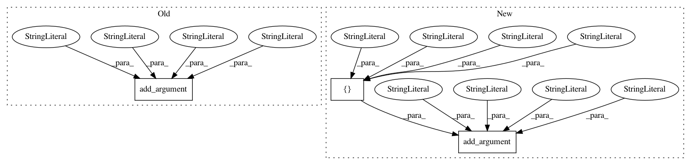

58b116304740207ad725dab68628def89f02f603,sos/__main__.py,,get_run_parser,#Any#Any#,160
Before Change
runmode.add_argument("-f", action="store_true", dest="__rerun__",
help="""Execute the workflow in a special run mode that ignores saved
runtime signatures and re-execute all the steps.""")
runmode.add_argument("-F", action="store_true", dest="__construct__",
help="""Execute the workflow in a special run mode that re-use existing
output files and recontruct runtime signatures if output files
exist.""")
output = parser.add_argument_group(title="Output options",
description="""Output of workflow""")
output.add_argument("-d", nargs="?", default="", metavar="DAG", dest="__dag__",
help="""Output Direct Acyclic Graph (DAGs) in graphiviz .dot format. An
After Change
runmode.add_argument("-n", action="store_true", dest="__dryrun__",
help="""Execute a workflow without executing any actions. This can be
used to check the syntax of a SoS file.""")
runmode.add_argument("-s", choices=["default", "ignore", "force", "build", "assert"],
default="ignore" if interactive else "default", metavar="SIGMODE",
dest="__sigmode__",
help="""How runtime signature would be handled, which can be "default"
(save and use signature, default mode in batch mode), "ignore"
(ignore runtime signature, default mode in interactive mode),
"force" (ignore existing signature and overwrite them while
executing the workflow), "build" (build new or overwrite
existing signature from existing environment and output files), and
"assert" for validating existing files against their signatures.
Please refer to online documentation for details about the
use of runtime signatures.""")
output = parser.add_argument_group(title="Output options",
description="""Output of workflow""")
output.add_argument("-d", nargs="?", default="", metavar="DAG", dest="__dag__",
help="""Output Direct Acyclic Graph (DAGs) in graphiviz .dot format. An
In pattern: SUPERPATTERN
Frequency: 3
Non-data size: 3
Instances
Project Name: vatlab/SoS
Commit Name: 58b116304740207ad725dab68628def89f02f603
Time: 2016-12-10
Author: ben.bog@gmail.com
File Name: sos/__main__.py
Class Name:
Method Name: get_run_parser
Project Name: erikbern/ann-benchmarks
Commit Name: 3bf07f41715a8cfe64b4c7c7bfdaa46027b2892b
Time: 2021-01-10
Author: thomas@ahle.dk
File Name: plot.py
Class Name:
Method Name:
Project Name: Ambrosys/glyph
Commit Name: 434e6bc0eb91e19735584bd4de6d92569a5cd3f2
Time: 2018-09-11
Author: markus.quade@gmail.com
File Name: glyph/cli/_parser.py
Class Name:
Method Name: get_parser